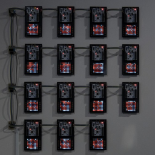
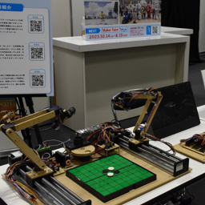
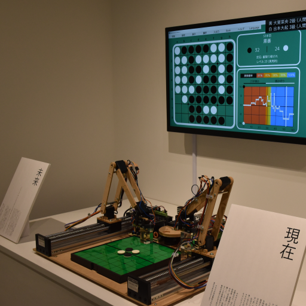
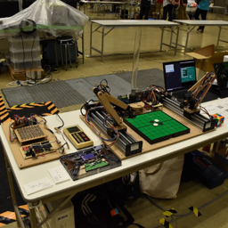
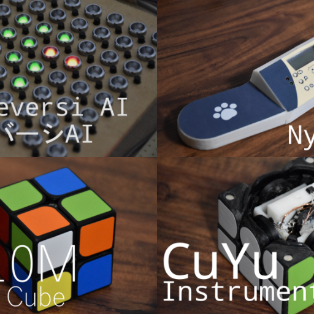
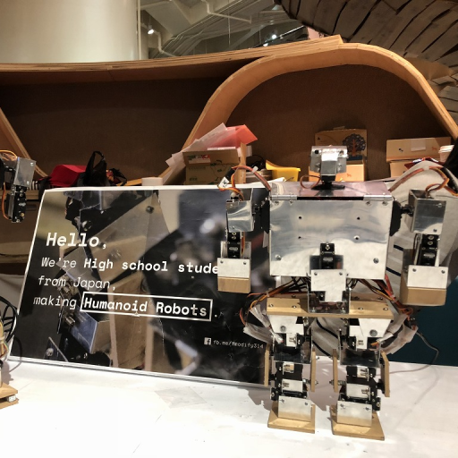
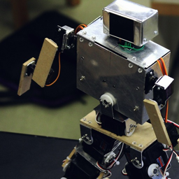

Home
Works
Exhibitions
Researches
Contact
日本語
Exhibitions
Exhibitions I attended

KUMA experiment 2023-24 vol.1 (2023)

EdgeTech+ 2022 Maker Faire Tokyo Branch Version (2022)

Kuma experiment vol.1 (2022)

Maker Faire Tokyo 2022 (2022)
KUMA EXHIBITION 2022 Trans X Formation (2022)

Maker Faire Tokyo 2021 (2021)
Maker Faire Tokyo 2020 (2020)

World Maker Faire New York 2018 (2018)

Maker Faire Tokyo 2018 (2018)
Maker Faire Tokyo 2017 (2017)
Maker Faire Tokyo 2015 (2015)